Disk1
Directory of C:\HOME\download\disk1
[.] [..] AM2100.DO_ AVEXTRA.TXT COMDEV.IN
DEPCA.DO_ disk1.txt E20ND.DO_ E21ND.DO_ ELNK.DO
ELNK16.DO_ ELNK3.DO_ ELNKII.DO_ ELNKMC.DO_ ELNKPL.DO
EXP16.DO_ EXPAND.EXE I82593.DO_ IBMTOK.DO_ IFSHLP.SY
LICENSE.TXT LM21DRV.UP_ MSDLC.EX_ NDIS39XR.DO_ NDISHLP.SY
NE1000.DO_ NE2000.DO_ NET.EX_ NET.MS_ NETBIND.COM
NETH.MS_ NI6510.DO_ NWLINK.EXE OEMDLC.INF OEMODI.IN
OEMRAS.IN_ OEMTCPIP.INF OLITOK.DO_ PE2NDIS.DO_ PENDIS.DO
PRO4.DO_ PRORAPM.DW_ PROTMAN.DO_ PROTMAN.EX_ RASCOPY.BA
README.TXT SETUP.EXE SMCMAC.DO_ SMC_ARC.DO_ STRN.DO
TLNK.DO_ WCNET.INF WCSETUP.INF WCSYS.INI WORKGRP.SY
53 File(s) 1,130,630 bytes
2 Dir(s) 1,105,317,888 bytes free
Disk2
Directory of C:\HOME\download\disk2
[.] [..] ADDNAME.EX_ AVEXTRA.TXT DNR.EX
EMSBFR.EX_ HOSTS IPCONFIG.EX_ LICENSE.TXT LMHOSTS
MSDSK3-2.EXE NEMM.DO_ NETBIND.COM NETWORKS NMTSR.EX
PING.EX_ PROTOCOL SERVICES SOCKETS.EX_ TCPDRV.DO
TCPTSR.EX_ TCPUTILS.INI TINYRFC.EX_ UMB.CO_ VBAPI.386
VSOCKETS.386 WINSOCK.DL_ WIN_SOCK.DL_ WSAHDAPP.EX_ WSOCKETS.DL
28 File(s) 595,870 bytes
2 Dir(s) 1,105,317,888 bytes free
copy c:\config.sys c:\config.bak[ENTER]
copy c:\autoexec.bat c:\autoexec.bak[ENTER]
|
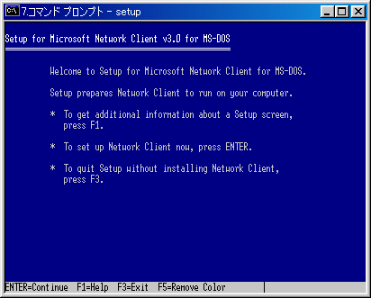 左のような画面になるので、何も考えずにEnterを押そう。 |
|
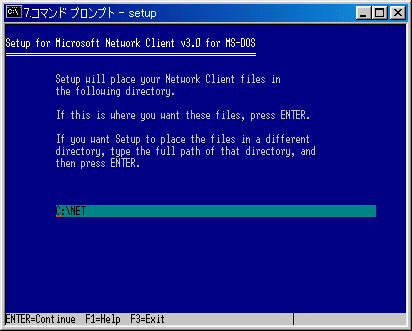 左のような画面になるので、何も考えずにEnterを押そう。 |
|
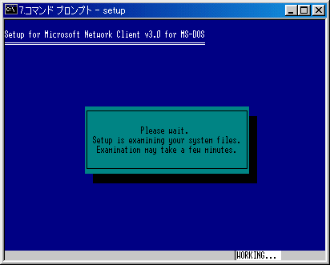 左のような画面になるので、何も考えずにEnterを押そう。 |
|
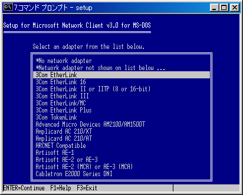 左のような画面になります。カーソルキーの上下を使って、3Com EtherLinkを選択しよう。本来ならばここでネットワークカードを選択するのだが、インストーラーがカードをきちんと認識しないケースが多いので、後でセットアップファイルを変更することにする。 |
|
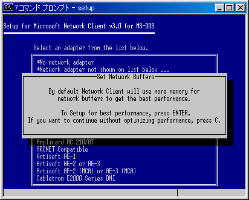 左のような画面になるので、何も考えずにEnterを押そう。 |
|
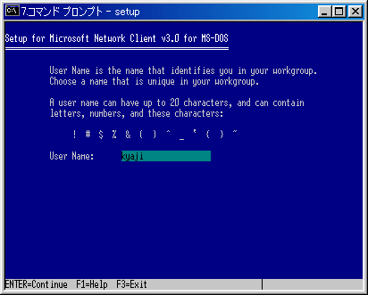 ユーザー名を聞いてくる。ログオンするためのユーザー名を入力しよう。もっとも、ログオン時に変えられますので、あまり意味はない。 |
|
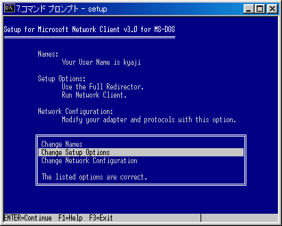 左のような画面になる。真ん中のChange Setup Optionsにカーソルをあわせ、Enterを押そう。 |
|
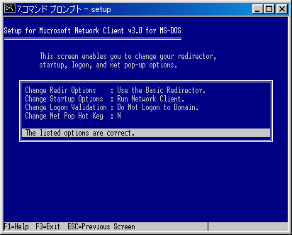 左のような画面になる。一番上のChange Redir OptionsをUse the Basic Redirectorに変更しよう。その後、最下段のThe listed options are correctにカーソルを合わせ、Enterを押してみよう。 |
|
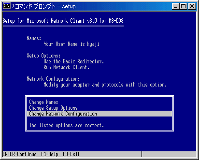 左のような画面になる。一番下のChange Network Configuratoinにカーソルを合わせ、Enterを押す。 |
|
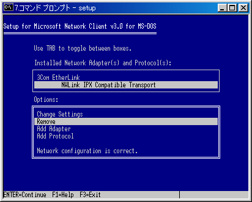 TABキーを一回押して、上の枠にフォーカスをセットする。そしてカーソル下キーを一回押して、NWLink IPX Compatible Transportを選択して下さい。もう一度TABキーを押して、カーソル上下でRemoveを選択してみよう。その後Enterを押してみよう。 |
|
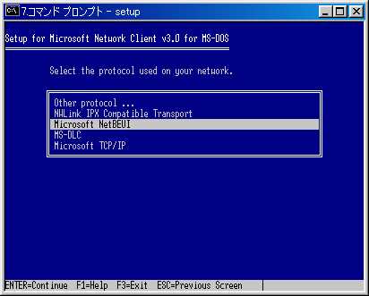 左のような画面になる。Microsoft NetBeuiを選択してみよう。 |
|
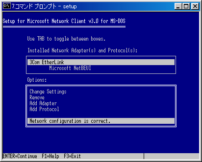 TABキーを操作して下段にカーソルのフォーカスを合わせ、Network configuration is correctを選択しましょう。 |
|
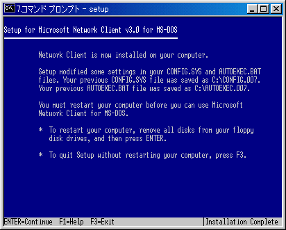 左のような画面になるので、何も考えずにEnterを押そう。 |